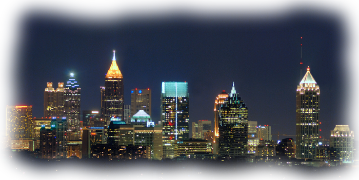

- April 12, 2011 - All clues and solutions posted. Full breakdown still to come.
- April 11, 2011 - Congratulations to Monkey Steven and his friend, Joe, as they are the Real Winners of GAC 2011. Our condolences to Cixelysd Maet, as they are now Game Control for GAC 2012.
- March 27, 2011 - You can download and fill out the waiver here.
- Bring a completed copy to Game Control during registration.
- We will have copies on hand to fill out on the day of the game, as well.
- February 18, 2011 - Registration is open. Start forming those teams!
- January 30, 2011 - Gameday announced! April 9, 2011. Save the date!
- Follow us on twitter @GAC2011